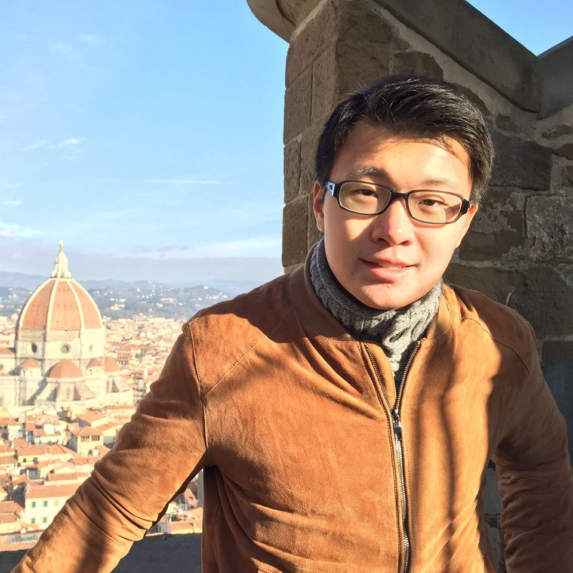

<strong>
	<p>Name: Yizhou Wang (Friends call me Vergil)</p>
	<p>Birth: April 15th 1994</p>
	<p>Major: Computer science</p>
	<p>Hobbies: painting, drawing, kickboxing and anything related to video games</p>
	<p>Favorite games: Dynasty warriors, Devil may cry, Shadow of colossus, Fallout, Battlefield</p>
	<p>Favortie kickboxer: Masato (From K-1 world max)</p>
	<p>Favorite band: Linkin Park I suppose...</p>
	<p>Favorite food: Mostly Chinese food due to my origin</p>
	<p>Lanuages: Java(First leanred, favorite and most good at!), Python(Including Django), C#(Including ASP.NET), C, C++, Javascript, Front-end-related(Html, Css, Jquery, Ajax, etc...), OCaml, Scheme... and English, Chinese, Japanese!</p>
</strong>
